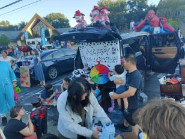
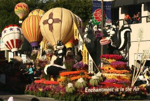
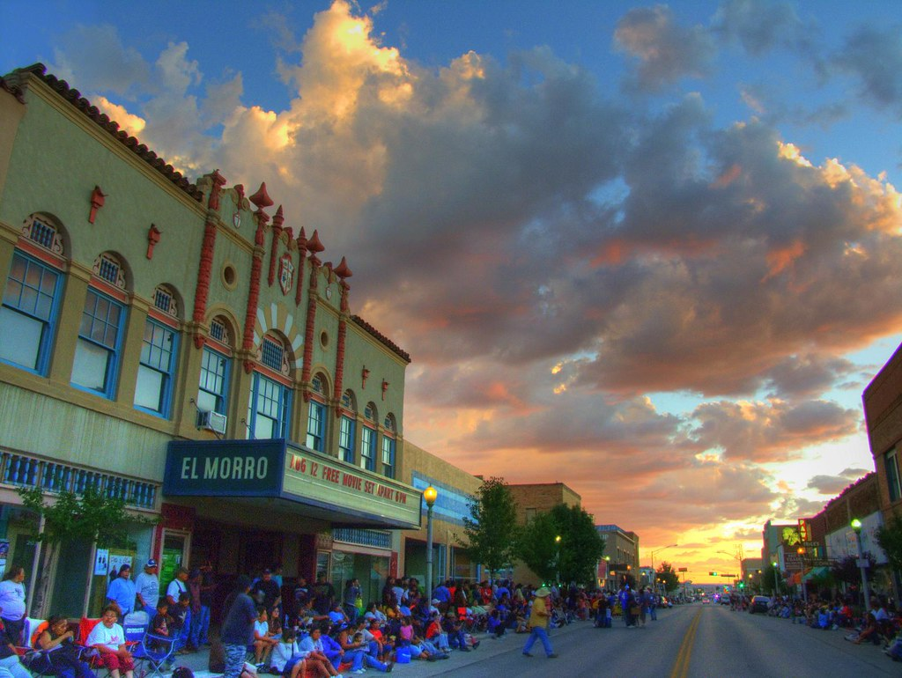

Here is Where residents post and host events

A "trunk and treat" is a Halloween event where children go from car to car in a parking lot to get candy, similar to trick-or-treating. Participants decorate the trunks of their cars with themes, and the trunk's open space is used to hand out treats and sometimes host games
This October 2025 we are hosting a Trunk and Treat in multiple locations!!! All of these location start at 4:00-8:00, go to all these location and you be drowning with Candy!.
Location one: Rio West Mall
Address: 1300 W I-40 Frontage Road Gallup, NM 87301 United States
Location two: The Door Christian Fellowship Ministries
Address: 2145 Cipriano Ave Gallup, NM 87301 United States

Get ready for the 44th Annual Red Rock Balloon Rally, happening December 5-7, 2025! What started as a passionate initiative by four enthusiasts to showcase the thrilling flying conditions amid the stunning red rock formations east of Gallup, New Mexico, has now evolved into one of the nation’s largest balloon events. Join us and experience the awe-inspiring sight of over 150 balloons taking to the skies!.
The Red Rock Balloon Rally Association, established in 1981, has been a pillar of support for the Gallup community. Through collaborations with numerous non-profit organizations, the Association has contributed tens of thousands of dollars to fundraising efforts.

Gallup Inter-Tribal Indian Ceremonial Parades date back to the early days of Ceremonial when all the local tribes would make their arrival to the old Ceremonial event grounds. Today we host two very stunning Parades: our world famous night parade as well as our Saturday morning parade. Both are must-see for the whole family.
July 31 - August 9, 2026.
The Ceremonial 5K Fun Run/Walk is designed to introduce healthy habits to people of all ages. It’s all part of an effort to get people moving as the nation faces health crisis like obesity, heart disease and diabetes
The Tribes involved in the night performances include the Aztec, White Mountain Apache, Southern Cheyenne, Chickasaw, Comanche, Hopi, Navajo Ohkay Owinge (San Juan Pueblo), Pima, Sioux, Taos Pueblo, Totonac Voladores, the Cellicion Dancers of the Zuni Pueblo, the Kallestewa of the Zuni Pueblo, the Olla Maidens of the Zuni Pueblo, as well as solos by the Maricopa, Omaha and Northern Cheyenne.
Our legendary rodeo dates back to the early days of Ceremonial. Rodeo is a deep-rooted part of Native American Culture displaying the grit and horsemanship skills many tribes are known for. Today our rodeo is open to the world featuring eight standard events of Bareback, Steer Wrestling, Breakaway, Saddle Bronc, Tie Down Roping, Team Roping, Barrel Racing, and Bull Riding. As we looked back at the beginnings of the Gallup Ceremonial we have re-added some of old favorite events that were enjoyed decades ago such as Wild Horse Race, Hide Race, Pony Express Race, Ladies Steer Riding, Wooly Riding, Frybread Pan Throwing and Buffalo Riding!
Gallup is a city in northwestern New Mexico, located near the Arizona border. It is situated in McKinley County and is surrounded by Native American lands, including the Navajo Nation and Zuni Pueblo. The city is a cultural crossroads and gateway to the state, known for its diverse population and proximity to natural areas.